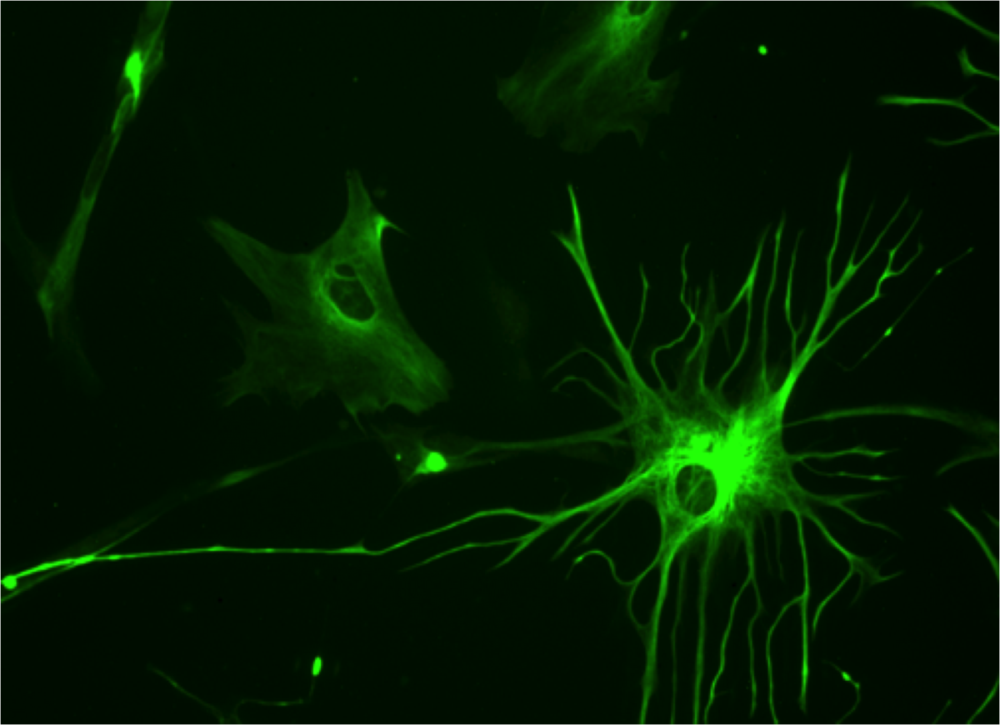
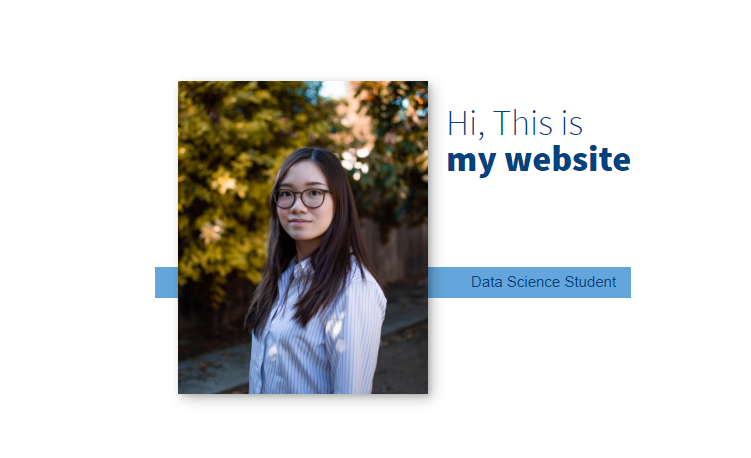
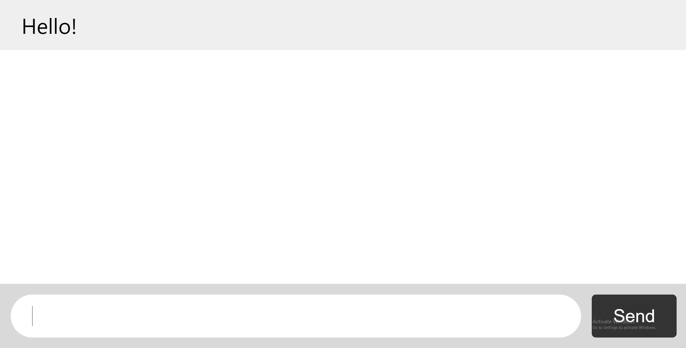

My Projects
Academic & Personal Projects
Discord Bot
Created a bot in Python that would respond to negative messages with an inspiring quote utilizing Repl.it DB database, discord.py, OS, requests, JSON, and random that run 24 hours with UptimeRobot and a script that pings the server.
Implemented object-oriented programming, YouTube-dl, asyncio, and FFmpeg add a music feature that allows the bot to play, pause, resume, and stop music when the title or URL is given.
Ants Vs Bees

Built a tower defense game in Python where the different types of ants protect the queen from bees. PopCap’s Plants vs. Zombies inspired the game.
Implemented functional and object-oriented programming models and testing large programs.
Power of Data
Utilized NumPy for table manipulations and visualizations to help biologists analyze data of specific cells in our lungs that are associated with the disease cystic fibrosis.
Utilized NumPy for table manipulations and visualizations to help biologists analyze data of specific cells in our lungs that are associated with the disease cystic fibrosis.
Portfolio Website
Utilize HTML and CSS to create a portfolio website
Chat Message
Implemented a chat messaging website using socket.io, javascript, heroku, and HTML